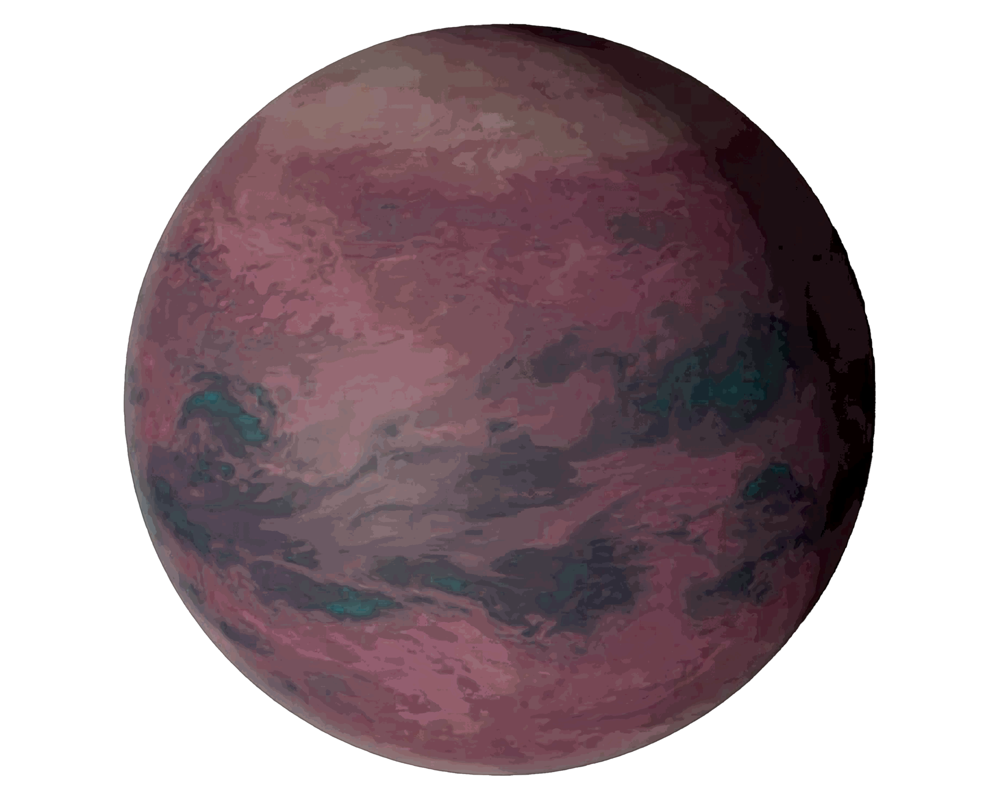

Libra:
Your essential purpose in life is to bring balance, justice, or harmony to whatever it is in your world that you regard as important. You are naturally equipped for this in that you are only too aware of the fact that there is a right and a wronfg, a rough and a smooth, a plasent and an unpleasent, etc, etc, side to every situation and person. It is this innate awareness of the ambiguities of life that gives rise to Libra's renowned indecisiveness. but really there is only ibe vasuc decision that you have to make. This is that you arrive conciously at a firm set of social values, This means that you have to ascertain what you think is important to society in your eyes, and what you can do that well contribute to society in that respect.
Indeed that contribution may be simply the establishing of a balanced relatiobship, or a balance within yourself. Anyhow, until you have begun to achieve this endk this social contribution, you will most likely vacillate between what you feel others expect from you and what you really want to do - something of which you are only partly concious.
This in turn can lead to your being rather superficial as you use your inate sense of harmony to blend in with everything and everyone. Or, perversely, you may eve be quite deliberately uncooperatiev as a kind of overreaction to your basic but vapid agreeability. No other sign can draw attention to beauty and justice, in such a beautiful and just way, as Libra can - when you know what your pitch is.
Your essential purpose in life is to bring balance, justice, or harmony to whatever it is in your world that you regard as important. You are naturally equipped for this in that you are only too aware of the fact that there is a right and a wronfg, a rough and a smooth, a plasent and an unpleasent, etc, etc, side to every situation and person. It is this innate awareness of the ambiguities of life that gives rise to Libra's renowned indecisiveness. but really there is only ibe vasuc decision that you have to make. This is that you arrive conciously at a firm set of social values, This means that you have to ascertain what you think is important to society in your eyes, and what you can do that well contribute to society in that respect.
Indeed that contribution may be simply the establishing of a balanced relatiobship, or a balance within yourself. Anyhow, until you have begun to achieve this endk this social contribution, you will most likely vacillate between what you feel others expect from you and what you really want to do - something of which you are only partly concious.
This in turn can lead to your being rather superficial as you use your inate sense of harmony to blend in with everything and everyone. Or, perversely, you may eve be quite deliberately uncooperatiev as a kind of overreaction to your basic but vapid agreeability. No other sign can draw attention to beauty and justice, in such a beautiful and just way, as Libra can - when you know what your pitch is.